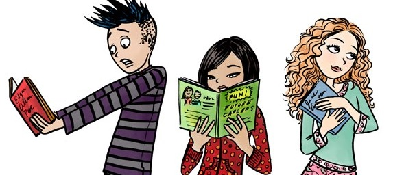

Se você é daqueles que mal acabou de abrir um livro e já está pensado no próximo que irá ler então chega junto, essa tabela é a sua cara!
Separei para você a biografia dos 13 maiores escritores da literatura universal. Aproveite para se inspirar e adicionar mais títulos na sua lista de leitura.
| Posição | Nome do Autor | Obra principal | Nascimento/Morte |
|---|---|---|---|
| 1º | Machado de Assis | Dom Casmurro | (1839-1908) |
| 2º | José Saramago | Ensaio Sobre a Cegueira | (1922-2010) |
| 3º | William Shakespeare | Romeu e Julieta | (1564-1616) |
| 4º | Fiódor Dostoiévski | Os irmãos Karamazov | (1821-1881) |
| 5º | Jorge Luís Borges | História da eternidade | (1899-1986) |
| 6º | Franz Kafka | A Metamorfose | (1883-1924) |
| 7º | Gabriel García Márquez | Cem anos de solidão | (1927-2014) |
| 8º | Federico García Lorca | Bodas de Sangue | (1898-1936) |
| 9º | Charles Bukowski | As Pessoas Parecem Flores Finalmente | (1920-1994) |
| 10º | Antoine de Saint-Exupéry | O Pequeno Príncipe | (1900-1944) |
| 11º | Clarice Lispector | A hora da estrela | (1920-1977) |
| 12º | Luís de Camões | Os Lusíadas | (1524-1580) |
| 13º | Monteiro Lobato | O Sítio do Picapau Amarelo | (1882-1948) |
Bons livros como esses citados nos ajudam a desenvolver o nosso senso crítico, trazendo assim a capacidade de ler e interpretar cenários a nossa volta e ao mesmo tempo nos posicionar de maneira efetiva e contundente quer a favor, quer contra ou ainda com uma postura neutra.
Quando criticamos algo precisamos fazer baseado em parâmetros concretos e precisamos demonstrar não só o conhecimento de causa, mas capacidade de discernir entre o simples e o complexo, o trivial e o inovador e assim por diante.
